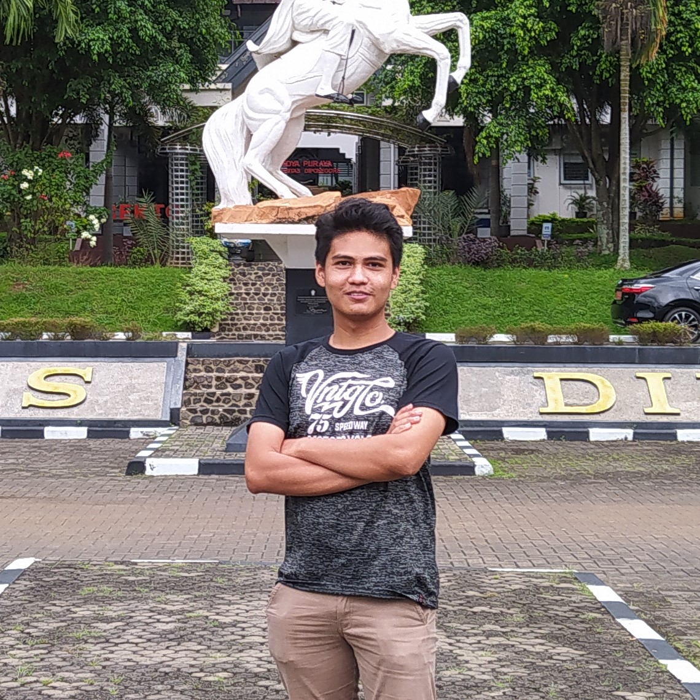

Salahudin's Site
My name was inspired by a general and Islamic fighter who came from Northen Iraq, The world has never witnessed a conqueror more polite and human like Salahuddin, His battle tactics and bravery were unmatched as a soldier, His heroic statesmanship and strength of character earned him respect even by his enemies, He is known for liberating the holy city of Jerusalem from the Crusaders